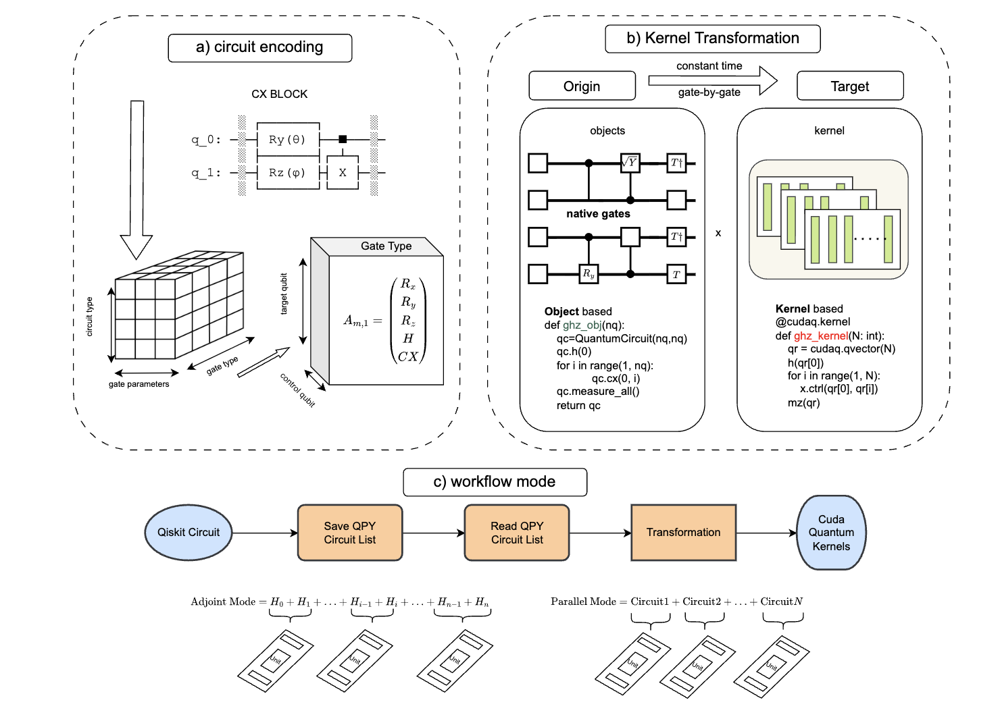
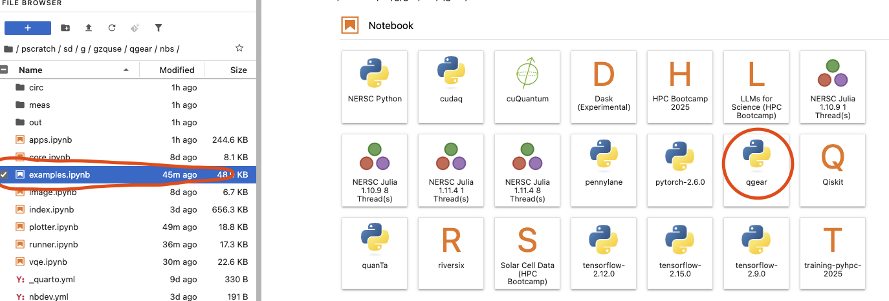
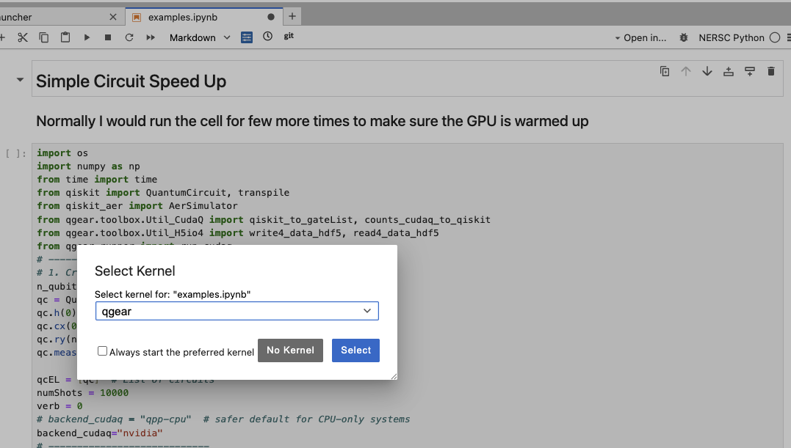
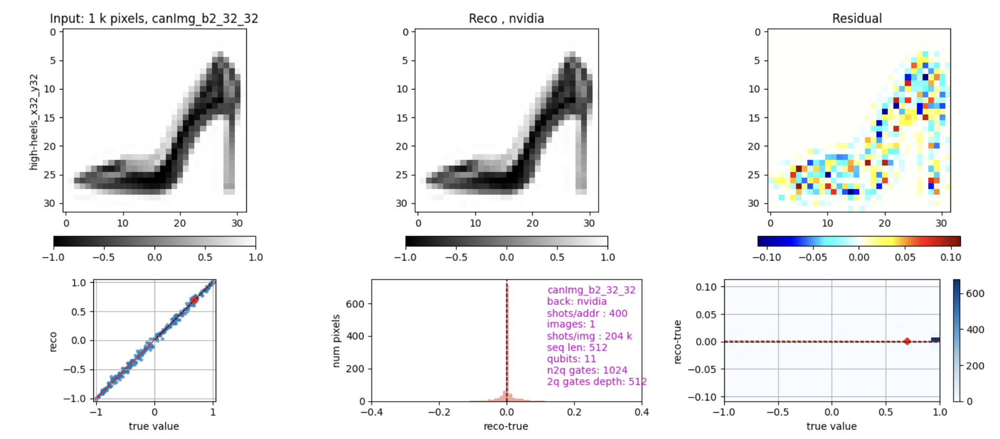

qgear
paper link: https://arxiv.org/pdf/2504.03967

Preliminary
- Let’s assume you already have a computational GPU node allocated on HPC
- Checking the NVIDIA GPU
nvidia-smi
- Create a env (we do not recommend using default such .local / HOME)
- Note that more than one GPU support need to enable MPI > the way we choose is high performance lustre file system
1. Install ENV
clone repo
git clone git@github.com:gzquse/qgear.git`
cd qgearmodule load conda
conda create --prefix=/pscratch/sd/{location}/{username}/qgear -y python=3.11 pip
conda activate $SCRATCH/qgearpip install -u qgear
pip install -u ipykernel
python -m ipykernel install --user --name qgear --display-name qgeartest qgear install successfully
qgear
___ ____ _____ _ ____ / _ \ / ___| ____| / \ | _ \ | | | | | | _| _| / _ \ | |_) | | |_| | | |_| | |___ / ___ \| _ < \__\_\ \____|_____/_/ \_\_| \_\ Installation successful! Welcome to QGEAR. Run 'qgear.run_cudaq()' to speed up. Fun fact: We love to use Emacs! 🐧
2. Open Jupyter Notebook
NERSC jupyter
https://jupyter.nersc.gov/
Select the kernel 
go to nbs/example.ipynb; run example 
Pypi
https://pypi.org/project/qgear/
Demos
1. simple speed up with random circuit and QFT
https://gzquse.github.io/qgear/examples.html
2. quantum image encoding
see appendix F in the paper https://gzquse.github.io/qgear/apps.html

local development
. ./pm_martin.dev.source
# make sure qgear package is installed in development mode
https://nbdev.fast.ai/tutorials/tutorial.html
pip3 install -e '.[dev]'
pip3 install qgear
# compile to have changes apply to qgear
nbdev_prepareSupported Quantum Gates
This is the list of quantum gates currently supported by the implementation, based on the gateId mapping.
| Gate ID | Gate Name | Description | Parameters | Example Usage |
|---|---|---|---|---|
| 1 | H (Hadamard) | Creates superposition by mapping ( | 0) and ( | 1). |
| 2 | RY rotation | Rotation around the Y-axis by a given angle. | angle (in radians), target qubit q0 |
ry(angles[j], q0) |
| 3 | RZ rotation | Rotation around the Z-axis by a given angle. | angle (in radians), target qubit q0 |
rz(angles[j], q0) |
| 4 | CX (CNOT) | Controlled-X gate; flips target qubit if control qubit is ( | 1). | Control qubit q0, target qubit q1 |
| 5 | Measure | Measures the qubit in the computational basis. | Target qubit q0 |
mz(q0) (example) |
| 6 | CP (Controlled-Phase) | Applies a phase shift to the target qubit if control qubit is ( | 1). | angle (phase in radians), control qubit q0, target qubit q1 |
| 7 | SWAP | Swaps the quantum states of two qubits. | Qubit q0, qubit q1 |
swap(q0, q1) |
| 8 | U (U3 gate) | General single-qubit rotation parameterized by three Euler angles. | theta, phi, lambda_ (all in radians), target qubit q0 |
u3(theta, phi, lambda_, q0) |
Notes
q0is the primary target qubit.q1is an additional target or control qubit (depending on the gate).anglesis an array of rotation parameters in radians.gate_typeandqvectorare used to determine qubit mapping for multi-qubit gates.- The U3 gate is the most general single-qubit gate and can represent any rotation.
Example Gate Sequence
```python # Apply Hadamard to qubit 0 h(q0)
Rotate qubit 0 around Y-axis by pi/4
ry(math.pi/4, q0)
Apply CNOT from qubit 0 to qubit 1
x.ctrl(q0, q1)
Apply a controlled-phase gate
r1.ctrl(math.pi/2, q0, q1)
Swap qubits 0 and 1
swap(q0, q1)
Apply a general U3 rotation
u3(theta, phi, lambda_, q0)
Goal
build the versatile all-in-one quantum accelerator for HPC-QPU hybrid regime that supports all the mainstream quantum frameworks.